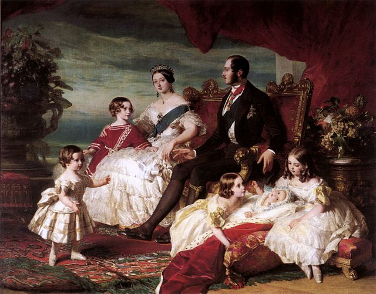
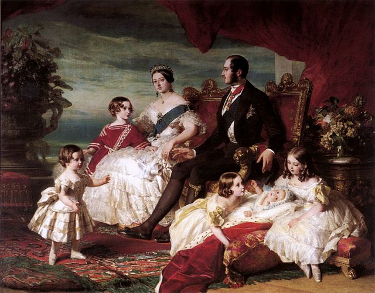
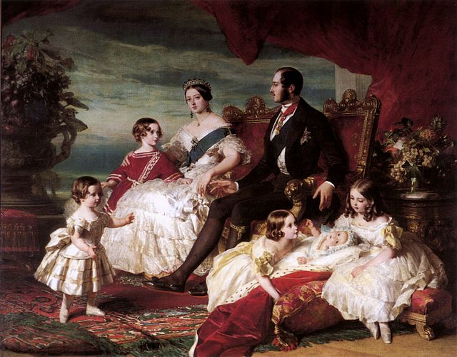

Let's learn about one of the best empires in United Kingdom history together!

Prince Albert of Saxe-Coburg
Royal academy
Victoria (Alexandrina Victoria; 24 May 1819 – 22 January 1901) was Queen of the United Kingdom of Great Britain and Ireland from 20 June 1837 until her death in 1901. Her reign of 63 years and 216 days—which was longer than those of any of her predecessors—constituted the Victorian era. It was a period of industrial, political, scientific, and military change within the United Kingdom, and was marked by a great expansion of the British Empire. In 1876, the British Parliament voted to grant her the additional title of Empress of India.
In the history of the United Kingdom and the British Empire, the Victorian era was the reign of Queen Victoria, from 20 June 1837 until her death on 22 January 1901. Slightly different definitions are sometimes used. The era followed the Georgian era and preceded the Edwardian era, and its later half overlaps with the first part of the Belle Époque era of continental Europe.
Victorian painting refers to the distinctive styles of painting in the United Kingdom during the reign of Queen Victoria (1837–1901). Victoria's early reign was characterised by rapid industrial development and social and political change, which made the United Kingdom one of the most powerful and advanced nations in the world. Painting in the early years of her reign was dominated by the Royal Academy of Arts and by the theories of its first president, Joshua Reynolds.
Victorian literature is English literature during the reign of Queen Victoria (1837–1901). The 19th century is considered by some to be the Golden Age of English Literature, especially for British novels. It was in the Victorian era that the novel became the leading literary genre in English. English writing from this era reflects the major transformations in most aspects of English life, from scientific, economic, and technological advances to changes in class structures and the role of religion in society. The number of new novels published each year increased from 100 at the start of the period to 1000 by the end of it. Famous novelists from this period include Charles Dickens, William Makepeace Thackeray, the three Brontë sisters, Elizabeth Gaskell, George Eliot (Mary Ann Evans), Thomas Hardy, and Rudyard Kipling.
 
